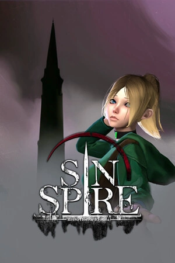

Simple and Expert modes
Simple mode keeps the main editing sections easy to scan. Expert mode reveals additional data and storage details.
Unofficial community tool · Windows · v0.2.0
Review supported save values, make focused changes, and write them to a separate copy. Your imported save stays untouched.

Protect your progress: Back up your save before editing. Only supported values can be changed, and the game may reject modified saves. This is an independent community project, not an official tool or an endorsement by Krasue Games.
Start with the commonly used fields, or switch to Expert mode to inspect additional saved data.
Simple mode keeps the main editing sections easy to scan. Expert mode reveals additional data and storage details.
Edit supported player values, skill levels, inventory counts, and progress statistics.
Change weapon durability or loaded ammunition. Repair all sets durability to 100 and leaves ammo unchanged.
Create a byte-for-byte backup, then save your edits as a separate file so the imported original remains untouched.
The editor is designed to keep the original save file safe while you review your changes.
Choose a `.sav` file or drag it into the editor. Close the game before editing.
Use the sections that match what you want to change. Double-click supported values to edit them.
Choose a destination for the edited copy, then select that copy in the game.
Sin Spire is by Krasue Games. Its name and artwork are used with permission; all game assets remain the property of their respective rights holders. This independent save editor is by LoseMyXelf (LMX) and is not an official game tool or endorsement.